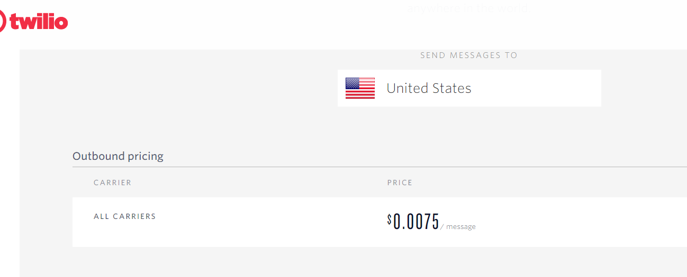

背景
最近国庆了，需要回家一趟。但是有点不放心自己的主机，毕竟是辛辛苦苦搬砖买来的主机嘛。而且房东那里也不太安全，所以干脆想着通过 frp 内网穿透把主机的 3389 端口转发到我的服务器上，在服务器上检测这个端口的存活状态，设置为定时任务。一旦检测到端口不存活了，就发短信通知我。
由于国内的短信服务都必须需要实名认证加备案，真鸡儿操蛋，老子最恶心这一套了，备案你个锤子。所以还是用国外的服务吧。找了一会找到了 https://www.twilio.com ，能给国内的手机号发短信，不过需要 visa 信用卡验证和一个 +1 的手机号码，咱手里这两个都不缺，索性注册使用了吧。
使用 twilio
注册
我的 twilio 账号是四个月前注册的了，注册过程也忘了，大致就是填写邮箱账号、设置密码、绑定信用卡、验证 +1 手机号，巴拉巴拉。
注册绑定信用卡赠送 10 $，这些足够发送 1000 条短信了，足够咱使用了😂



验证手机号
只有验证手机号才能分配一个 twilio 的的手机号，用来发送短信
发送短信过程比较长，耐心等个三四分钟
发送给短信测试
验证完手机号后，进入控制台 console ，

官方已经给出了各个语言的示例代码 Sending Messages
1 | EXCLAMATION_MARK='!' |
发送成功后会提示下面的
1 | { |
设置权限
如果你是要 curl 命令发送短信后提示下面的错误，是因为你的账号没有开发 TO 手机号的区域限制
1 | {"code": 20003, "detail": "Your AccountSid or AuthToken was incorrect.", "message": "Authentication Error - No credentials provided", "more_info": "https://www.twilio.com/docs/errors/20003", "status": 401}curl: (6) Could not resolve host: lls |
进入到这个页面 geo-permissions) ，在对应的国家区号上✔就行。
检测端口
直接使用 netstat 检测就可以，写的比较简单
1 | check_port() { |
定时任务
1 | */10 * * * * /root/check.sh |
每隔十分钟执行一次下面的脚本
1 |
|
端口存活的状态下就输出到日志，端口没存活的话就发短信
1 | ╭─root@sg-02 ~ |